Hi! I'm Kai-Chieh Ma, I am currently a second-year master student specializing in intelligent robotics at Department of Computer Science at University of Southern California.
Research Interests: Robotics, Aquatic Robots, Planning Algorithms, Machine learning, Multi-robots, Reinforcement Learning, Robot VisionNEWS: My paper "Informative Planning and Online Learning with Sparse Gaussian Processes" was accepted to ICRA 2017 on 1/15 !!!
NEWS: My new journal paper "Data-Driven Learning and Planning for Environmental Sampling" was submitted to Journal of Field Robotics on 2/7
About Me
I'm very interested in practical applications of robotics. This includes the application of robot soccer, personal robot, unmanned vehicles, etc. Robotics itself covers a wide range of disciplines like computer science, mechanical systems, and electrical engineering, etc. Within these disciplines, I'm most familiar with the area of computer science. Therefore, my specific interests include AI planning, machine learning (especially reinforcement learning), and computer vision. My ultimate goal is to build robots which can run autonomously and robustly in an uncertain and dynamic environment. In order to handle the uncertainty issue, I'm also interested in some probabilistic approach like Bayes filter and Markov decision processes. I am looking forward to having these hands-on experience in my future career.
Education

University of Southern California
Computer Science (Intelligent Robotics), Viterbi School of Engineering
Master of Science, 2015 - 2017
GPA: 3.94/4.0 (20 units currently)

National Taiwan University
Computer Science & Information Engineering, College of Electrical Engineering and Computer Science (EECS)
Bachelor of Science, 2008 - 2012
GPA: 3.66/4.0
Publications
-
"An Information-Driven and Disturbance-Aware Planning Method for Long-Term Ocean Monitoring"
Kai-Chieh Ma, Lantao Liu, Gaurav S. Sukhatme.
IEEE/RSJ International Conference on Intelligent Robots and Systems (IROS 2016). Deajeon, Korea. Oct, 2016.
Best Application Paper Award Finalist (out of 4), also Best Student Paper Award Finalist (out of 6)
-
"Multi-Robot Informative and Adaptive Planning for Persistent Environmental Monitoring"
Kai-Chieh Ma, Zhibei Ma, Lantao Liu, Gaurav S. Sukhatme.
International Symposium on Distributed Autonomous Robotic Systems (DARS 2016). London, UK. Nov 2016.
-
"Multi-robot Informative Planning for Long-Term Ocean Monitoring"
Kai-Chieh Ma, Lantao Liu, Gaurav S. Sukhatme.
IEEE International Conference on Robotics and Automation (ICRA 2016) Workshop: AI for Long-term Autonomy. Stockholm, Sweden. May, 2016.
-
"A Hierarchical Informative Path Planning Method for Ocean Monitoring"
Kai-Chieh Ma, Lantao Liu, Gaurav S. Sukhatme.
The 1st Southern California Robotics Symposium (SCR 2016). San Diego, CA. Apr 2016.
-
"Informative Planning and Online Learning with Sparse Gaussian Processes"
Kai-Chieh Ma, Lantao Liu, Gaurav S. Sukhatme.
To appear in IEEE International Conference on Robotics and Automation (ICRA 2017). (ArXived)
-
"Data-Driven Learning and Planning for Environmental Sampling"
Kai-Chieh Ma, Lantao Liu, Hordur K. Heidarsson, Gaurav S. Sukhatme.
Submitted to Journal of Field Robotics. (ArXived)
Research
Informative Planning and Online Learning for Environmental Monitoring
| 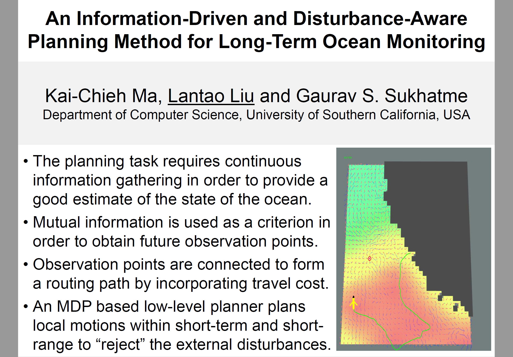 |
| An Information-Driven and Disturbance-Aware Planning Method for Long-Term Ocean Monitoring |
| 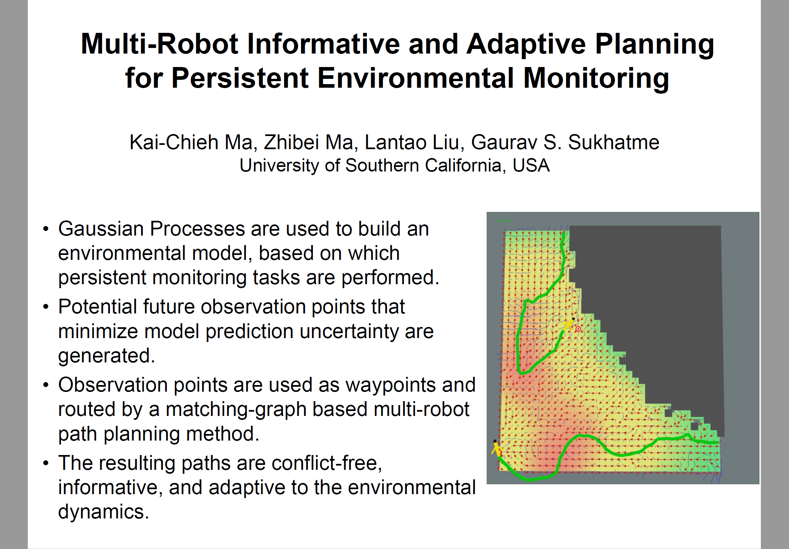 |
| Multi-Robot Informative and Adaptive Planning for Persistent Environmental Monitoring |
| Informative Planning and Online Learning with Sparse Gaussian Processes |
Projects
-
Multi-Robot Simultaneous Localization and Mapping (Multi-SLAM) (Nov 2016)
Project Report (December, 2016)Single-robot SLAM Multi-robot SLAM -
Machine Learning: Santander Customer Satisfaction Competition (Apr 2016)
3rd place among all groups (21) in the class and 566th out of 5236 groups participating the competition
Dealing with supervised binary classification using gradient boosting and decision trees
Project Report (May, 2016)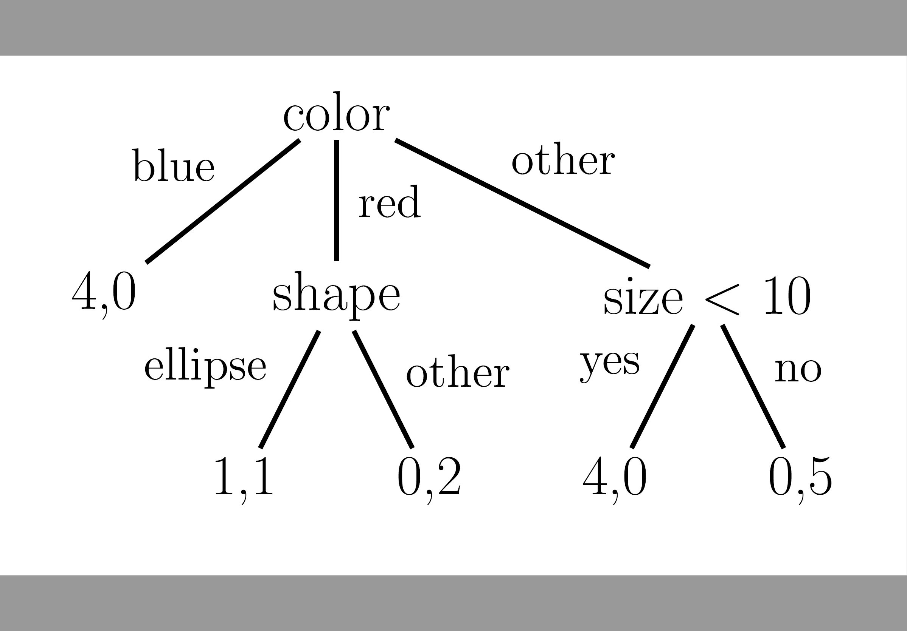 Sample Decision Tree
(Source: Machine Learning: a Probabilistic Perspective by Kevin Patrick Murphy) -
Humanoid Robotics (NAO) Control (Apr 2016)
Stepping Behavior -
NTU RobotPal Team for RoboCup Standard Platform League (Sep 2011 - Jun 2012, Sep 2014 - Feb 2015)
Computer Science & Information Engineering, College of Electrical Engineering and Computer Science (EECS)
Researcher & Developer
Team Description Paper (May 8, 2012)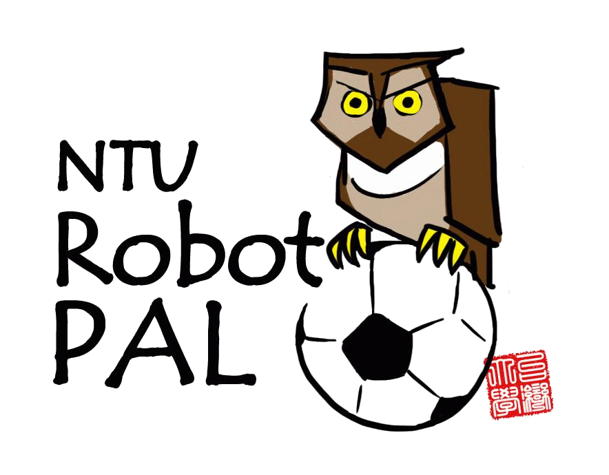 Team NTU Robot Pal 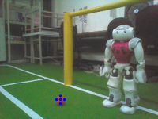 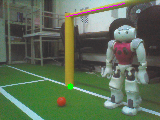 Ball Detection Goal Post Detection 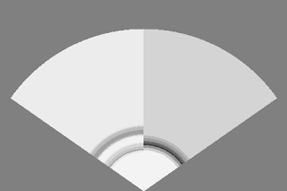 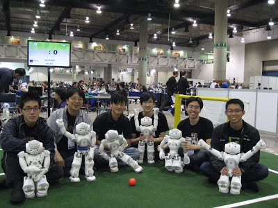 Sonar-Based Obstacle Detection via Occupancy Grid Mapping Members: (Left to right) Chih-Chung Chou, Chieh-Chih (Bob) Wang (Advisor), Chun-Kai Chang, Bang-Cheng Wang, Chun-Hua (Alan) Chang, and Kai-Chieh Ma -
Extended Kalman Filter Localization (Dec 2011 – Feb 2012)
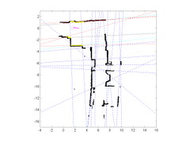 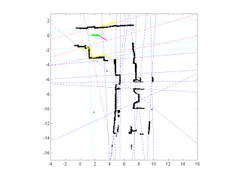 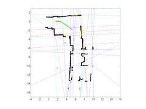 frame 001 frame 050 frame 100 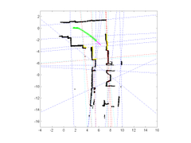 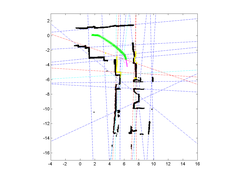 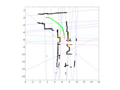 frame 150 frame 200 frame 250 -
Controlled ER7 robot arm to grab and stack bricks. (2011)

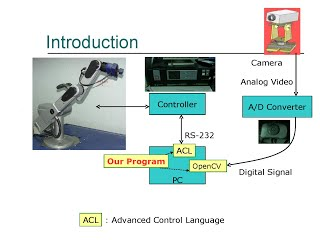 Detecting Bricks System Overview -
Maze Exploring by Pioneer 3DX (2011)
Report paper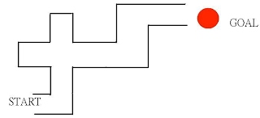 
maze Pioneer 3DX
Contact
Feel free to ask me any questions!
Email: markcsie@gmail.com
GitHub: https://github.com/markcsie